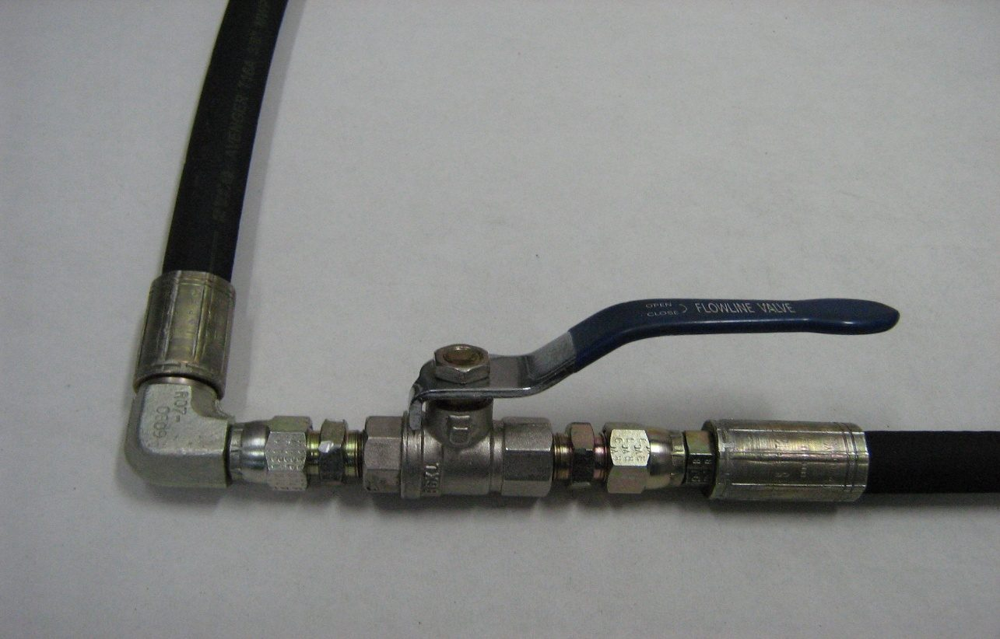
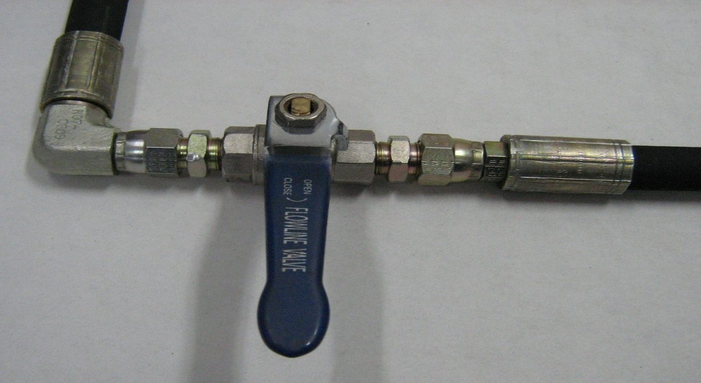

Source: CHAPTER 9 - START UP-90 SERIES.docx — Cesco Truck Mounting Instructions, Oct 2026 set. Read status: text ok; 2 embedded images.
Loosen bounce strap per Operators Manual; bypass pause valve with ¼" ball valve; 10-micron filtered fluid; fill inlet line and pump/motor housings; start in neutral, idle, ramp; cycle chute jack; close ball valve; cycle mix/discharge ≥5 min; refit pause valve and retest. Two WARNING boxes (neutral swashplate, vehicle disabling).
Warnings (text boxes)
- WARNING: The procedure may require the vehicle/machine to be disabled (wheels raised, work function disconnected, etc.) to prevent injury; take safety precautions before moving the vehicle/machine.
- WARNING: Do not start truck unless pump is in neutral (0° swashplate angle). Ensure all personnel are clear in case the barrel is activated during initial start-up.
Bounce strap
Tightened at the factory to avoid damage to the barrel track ring or trunnion rollers in transit. Loosen and adjust per the Operators Manual before starting the mixer.
90 series hydraulics
- To reduce risk of contaminating the pause valve (supplied with pendant & remote controls), initially bypass it using a ¼" ball valve & nipples (photos). Ensure ball valve is open.


- Select hydraulic fluid with a reputable supplier per the Cesco operators manual. CLEANLINESS IS ESSENTIAL.
Procedure (new installation, or after pump/motor removal)
- Inspect pump/motor for shipping damage; ensure all components (reservoir, hoses, valves, fittings, heat exchanger) are clean.
- Fill reservoir with recommended fluid passed through a 10 micron (nominal, no bypass) filter. Contaminated fluid can cause unexpected barrel movement.
- Fill inlet line (reservoir→pump) before start-up; check fittings tight, no restrictions or air leaks.
- Fill pump and motor housings with clean oil via the upper case drain port.
- Pump in neutral → start truck engine.
- Idle several minutes; check/top up fluid.
- Slowly raise engine speed to normal operating RPM.
- Raise & lower powered chute jack (if fitted) several times; check fluid.
- Return to idle.
- Check personnel clear, then slowly close the ball valve.


- Slowly increase engine speed and barrel revs (swash plate angle) to normal.
- If not operating correctly, shut down and determine problem (Cesco Engineering Dept can assist with test pressure gauges).
- Cycle slowly between forward and reverse (mix & discharge) for at least five (5) minutes.
- Shut down truck.
- Remove ball valve, fit hoses to Pause Valve; retest and confirm pause valve safety features work.
- Check reservoir level; top up.
"The transmission is now ready for operation."
Full source text — verbatim from CHAPTER 9 - START UP-90 SERIES.docx
Complete text of the source document in source order (spelling as in the source), for checking against the article above. Text boxes and figure positions are marked.
Chapter 9 Initial Start Up Procedure
Bounce Strap
The Bounce Strap would have been tightened at the factory to avoid damage to the barrel track ring or trunnion rollers in transit.
Loosen the Bounce Strap and adjust as per instructions contained in the Operators Manual supplied with each mixer before starting the mixer.
90 SERIES HYDRAULICS
To reduce the risk of contamination to the pause valve, (as supplied with Pendant & Remote controls), initally bypass the pause valve using a ¼” ball valve & nipples, as shown below.
[Figure: image1.jpeg — shown above]
Ensure ball valve is in open position.
Hydraulic fluids used should be carefully selected with assistance from a reputable supplier, following the guidelines presented in the Cesco operators manual supplied with each mixer.
Always remember CLEANLINESS IS ESSENTIAL.
The following start-up procedure should always be followed when starting-up a new mixer installation or when restarting an installation in which either the pump or motor has been removed from the system.
Text box WARNINGThe following procedure may require the vehicle/machine to be disabled (wheels raised off the ground, work function disconnected, etc.) while performing the procedure in order to prevent injury to the technician and bystanders. Take necessary safety precautions before moving the vehicle/machine.
Prior to installing the pump and/or motor, inspect the units for damage incurred during shipping and handling. Make certain all system components (reservoir, hoses, valves, fittings, heat exchanger, etc.) are clean prior to filling with fluid.
Fill reservoir with recommended hydraulic fluid which should be passed through a 10 micron (nominal no bypass) filter prior to entering the reservoir. The use of contaminated fluid will cause damage to the components, which may result in unexpected barrel movement.
The inlet line leading from the reservoir to the pump must be filled prior to start-up. Check inlet line for properly tightened fittings and make sure it is free from restrictions and air leaks.
Be certain to fill the pump and motor housing with clean hydraulic oil prior to start-up. Fill the housing by pouring filtered oil into the upper case drain port.
Text box WARNINGDo not start truck unless pump is in neutral position (0 degrees swashplate angle). Ensure all personnel are clear in case barrel is activated during initial start-up.
Ensure pump is in neutral, then start truck engine.
Allow to idle for several minutes, then check fluid levels & top up if necessary.
Slowly increase truck engine speed to normal operating RPM.
Raise & lower powered chute jack (if fitted) several times & check fluid levels.
Return truck engine to idle.
Check that all personnel are clear, then slowly close the ball valve.
[Figure: image2.jpeg — shown above]
Slowly increase truck engine speed & barrel revs (ie swash plate angle) to normal operating speeds.
If system does not operate correctly shut down & determine problem. Assistance with fixing of test pressure gauges etc is available from Cesco Engineering Dept.
Test cycle slowly between forward and reverse (mix & discharge) for at least five (5) minutes.
Shut down truck.
Remove ball valve & fit hoses to Pause Valve. Retest system & test that Pause Valve safety features operate correctly.
Check reservoir level and add fluid if necessary.
The transmission is now ready for operation.